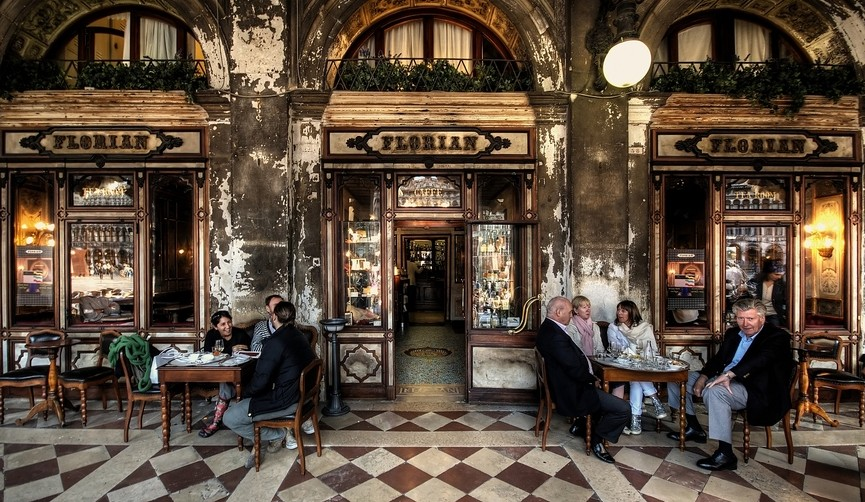

Caffè Letterario Majorana

Tutto cominciò nel lontano 2003 con l'apertura di un piccolo Bar di quartiere in Via Piazza Bellini 70,Napoli. Tutto andava per il meglio, il piccolo Bar funzionava bene e cominciava ad essere frequentato anche dagli artisti della Galleria di Napoli. Pietro e Nicola si prodigavano nella preparazione di manicaretti succulenti e piano piano,tutti quegli occasionali avventori cominciarono a diventare una piccola folla di clienti fissi. Tutta quella gente cominciò a dire che sarebbe stato bello avere uno spazio dove sedersi fare quattro chiacchiere mentre si pranzava, allora Pietro e Nicola decisero di fare il grande passo, trasformare il bar in un caffè letterario.
Nel 2006 cominciò l'avventura, inizialmente fu molto dura per le spese d'apertura e un po' d'inesperienza ma con molta tenacia e forza di volontà le cose andarono nel migliore dei modi, ed infatti dopo soli tre anni quel piccolo caffè di soli 50 posti cominciò a diventare un po' stretto, quei pochi posti non bastavano mai. Quindi all'inizio del 2009 fu la volta di un' ampliamento e tutto fu ristrutturato. Il Nuovo Locale era sempre lì restando così, sempre abbastanza vicino al Centro di Napoli, qui trascorsero altri cinque Anni di lavoro tutto procedeva per il meglio e quando cominciò a farsi strada il desiderio di avere un bel giardino per accogliere i clienti all'aperto fu presa la decisione di ampliarlo ancora una volta ed adesso è uno tra i caffè letterari più famosi di Napoli.